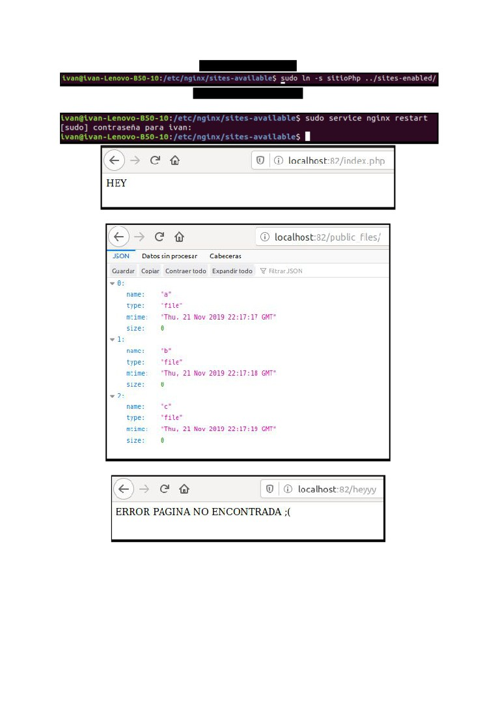

NGINX
¿Que es nginx y como funciona?
Nginx, pronunciado como “engine-ex”, es un servidor web de código abierto que, desde su
éxito inicial como servidor web, ahora también es usado como proxy inverso, cache de
HTTP, y balanceador de carga.
Nginx está diseñado para ofrecer un bajo uso de memoria y alta concurrencia. En lugar de
crear nuevos procesos para cada solicitud web, Nginx usa un enfoque asincrónico basado
en eventos donde las solicitudes se manejan en un solo hilo.
Con Nginx, un proceso maestro puede controlar múltiples procesos de trabajo. El proceso
maestro mantiene los procesos de trabajo, y son estos lo que hacen el procesamiento real.
Algunas características comunes que se ven en Nginx incluyen:
● Proxy inverso con caché
● IPv6
● Balanceo de carga
● Soporte FastCGI con almacenamiento en caché
● Websockets
● Manejo de archivos estáticos, archivos de índice y auto indexación
● TLS / SSL con SNI
Instalación
Para instalar facilmente nginx ejecutamos estos comandos:
sudo apt-get update
sudo apt-get install nginx
Para ejecutar el servidor de nginx usaremos
sudo service nginx start
Sitio 1
Para el directorio donde estaran los ficheros se reutilizara el que se uso en la practica
anterior de apache pero en caso de no haberlo creado ejecutar:
sudo mkdir /var/www/sitioPhp
Y dentro crearemos el fichero index.php.
touch /var/www/sitioPhp/index.php
Ahora vamos a crear el site en sites-available de nginx
Y vamos a configurar las directivas necesarias
Para que el servidor escuche desde el puerto 82 vamos a cambiar el 80 de default por 82
Vamos a configurar el directorio root del site
Para poder usar php vamos a necesitar instalar fpm
sudo apt-get install php7.2-fpm
Y usar esta directiva
Ahora vamos a redirigir los logs a /etc/logs/sitioPhp
No olvides de crear el directorio o no apareceran los logs.
sudo mkdir /etc/logs/sitioPhp
Esta es la configuración para la compresion de ficheros superiores a 80kb
Para la pagina de error 404 primero vamos a crear la pagina que se visualizara en
/var/www/errores
Y vamos a configurar la redireccion a esta pagina en el site.
Ahora vamos a crear el directiorio public_files en /var/www/sitioPhp
Ahora hay que configurar el site para que muestre los archivos de dentro de public_files en
formato json.
Finalmente vamos a configurar el site para bloquear cualquier path que contenga la palabra
private
Con todos estos pasos nuestro servidor php deberia estar funcionando correctamente con
todas las especificaciónes que se pedian.

Vamos a habilitar el site
Vamos a realizar un restart
Sitio 2
Para este site voy a reutilizar el servidor de node creado en la practica anterior
Igual que en el site anterior creamos la carpeta sitioNode en /etc/nginx/sites-available/
Vamos a volver a cambiar el puerto para que ahora escuche el 81
Establecemos como directiorio root /var/www/sitioNode
Configuramos los logs
Reutilizaremos la pagina de 404.html usada anteriormente
Configuraremos el proxy para redirigir el trafico al puerto 3000 que es donde se encuentra el
servidor de node
Finalmente configuraremos la redirección de documentación a la pagina de node
Ahora ya podemos crear el enlace simbolico y activar el servidor. No te olvides de encender
el servidor de node.